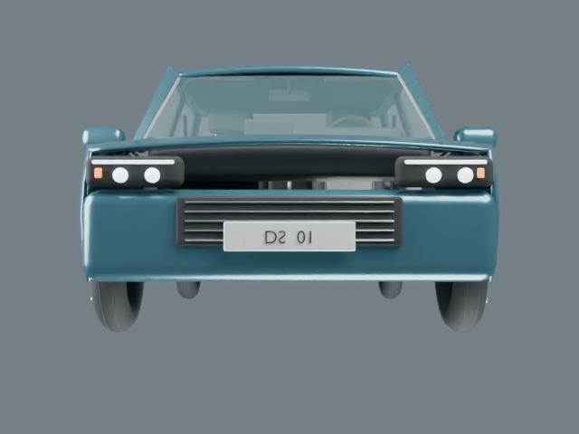
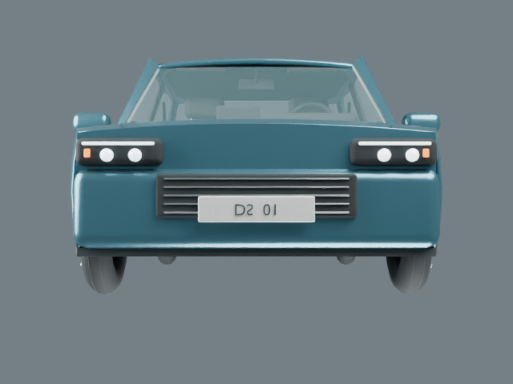
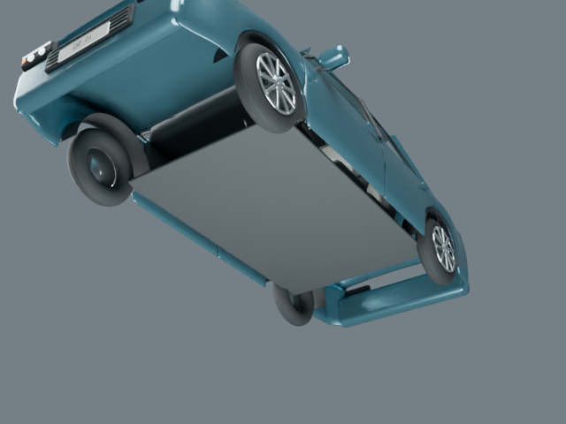
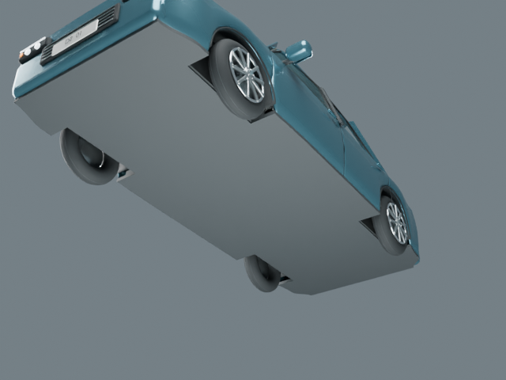
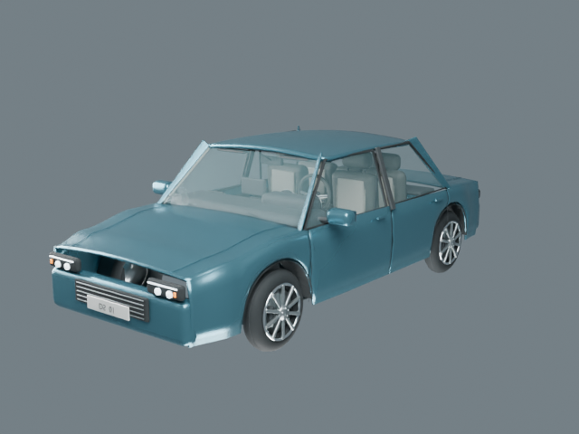
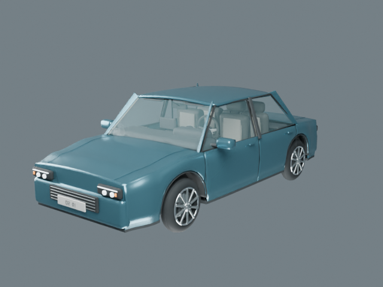
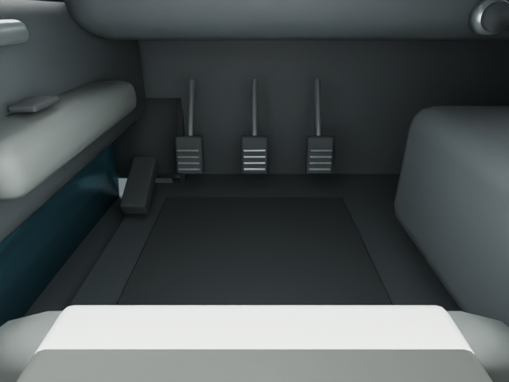

До

Visual QA Demo
Точечный ремонт исходника DS_Sedan_A_reviewed.blend скриптом Blender. Сопоставлены реальные рендеры с одинаковыми камерами и светом. Исходная модель сохранена без перезаписи.
До

После

Днище · до

Днище · после

Косой вид · до

Косой вид · после

Педали и пол · после

Внизу показан упрощённый закрывающий кузовной узел. Это не детальная модель агрегатов автомобиля.